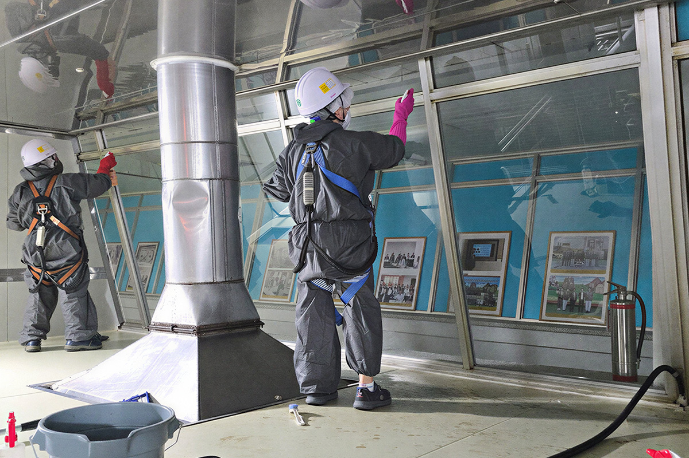

공장 청소
깨끗한 작업 환경은 직원 복지의 첫 단추 입니다.
오랜기간 공정이 돌아가는 공장 내부는 먼지, 기름때, 화학물질 등 다양한 오염물질이 쌓이게 됩니다. 이러한 오염물질들을 방치할 경우 작업 환경을 악화시키고, 안전사고의 위험을 증가시키는 등 여러 악영향을 미치기에 정기적인 관리가 필요합니다.
공장 청소 대상
공장
창고
사무실
기계실
배관
보일러실
공장 창고 / 공장 사무실 / 공장 기계실 / 배관실 / 보일러실 / 냉난방기 / 배수로 등 공장 내부 시설 전체
공장 청소 효과
공장 환경 개선
청소 작업으로 인한 작업 환경 개선
안전사고 예방
산업 재해 방지를 통한 작업 안전 확보
제품 품질 향상
이물질 제거 청소로 인한 불량 감소
작업 효율 증가
작업환경 개선을 통한 작업 효율 향상
공장 청소 작업 갤러리
청소 과정을 확인 할 수 있습니다


청소 과정이 담긴 동영상
사진과 영상 갤러리에서 더 많은 청소 과정을 확인 할 수 있습니다.